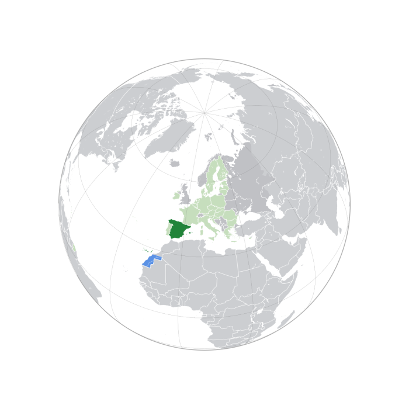

Spain Flag
Spain was chosen as the host nation by FIFA in London on 6 July 1966. Hosting rights for the 1974 and 1978 tournaments were awarded at the same time. West Germany and Spain were initially competing for a hosting bid, but ultimately agreed a deal whereby Spain would support West Germany for the 1974 tournament and West Germany would allow Spain to bid for the 1982 World Cup unopposed. As a result, West Germany withdrew its bid for the 1982 edition.

Spain Location
The decision to host a World Cup in Spain was controversial: At the time of Spain being selected, the country was still under the dictatorship of Francisco Franco's regime, However, the regime of Francoist Spain had ended by 1975 with the death of Franco. The World Cup had significant effects on Spanish society after the democratic transition because, from the period from 1975 to 1982, Spain was still undergoing a transition from dictatorship to democracy.